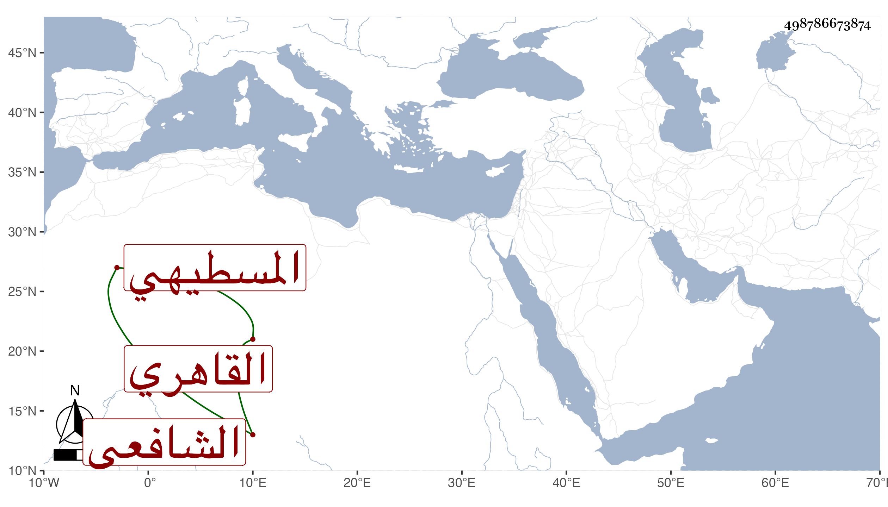

0902Sakhawi.DawLamic.ITO20230111-ara1.EIS1600.498786673874
Biography ID: 498786673874
787
علي بن عامر بن عبد الله نور الدين المسطيهي ثم القاهري الشافعي والد أحمد الماضي . كان مسنا خيرا تاليا للقرآن ساكنا مديم الجلوس بحانوت التوتة بالمقسم للتكسب ، وقد سمع ختم الصحيح على التنوخي والعراقي والأبناسي والغماري وابن الشيخة وأجاز لنا . مات في يوم عيد الأضحى سنة ستين رحمه الله .
